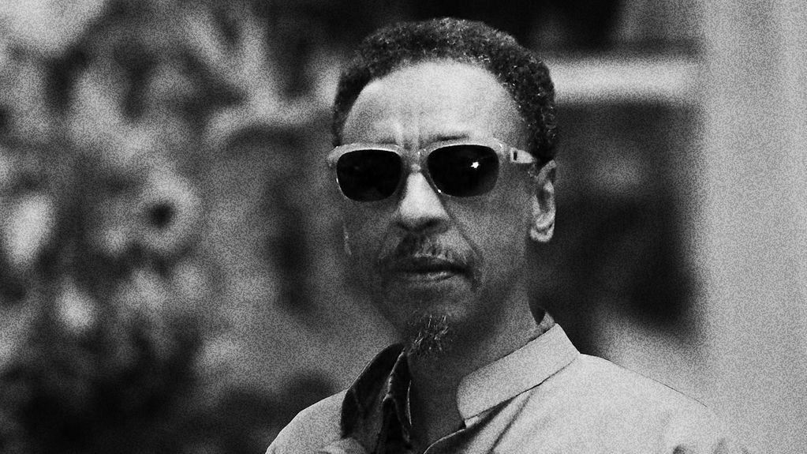

NEA announces its 2021 Jazz Masters
Four luminaries – Henry Threadgill, Terri Lynne Carrington, Jimmy "Tootie" Heath and Phil Schaap – will be inducted in a ceremony scheduled, virtually, for next spring.

Kassa Overall’s Video For ‘I Think I’m Good’ Is A Deep Exploration Of Contrasts
This video, part of our 'We Insist' timeline of 2020's noteworthy protest music, was released Oct. 26.
Swinging The Clouds Away: Jazz Takes Over Sesame Street
On this show, the Jazz at Lincoln Center Orchestra with Wynton Marsalis invite the Sesame Street gang onstage. Plus, trombonist Joe Fielder's Open Sesame share rare songs from the Sesame songbook.